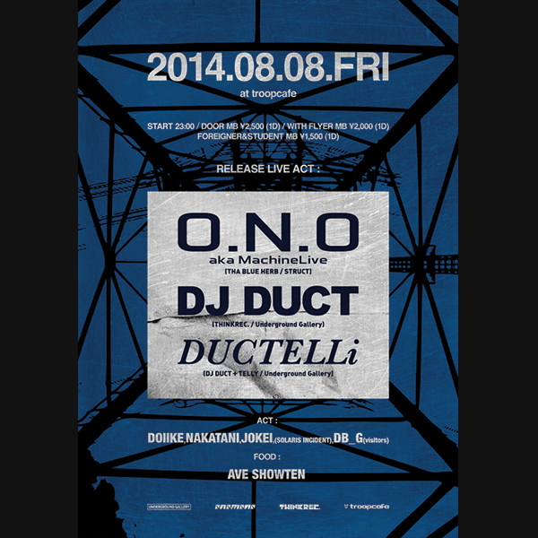
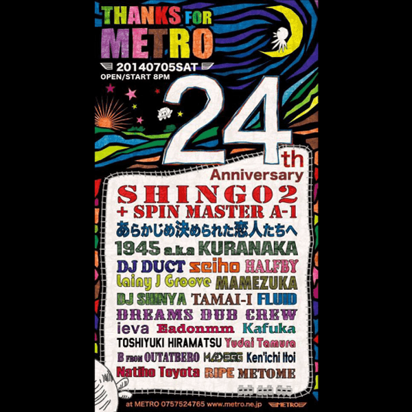
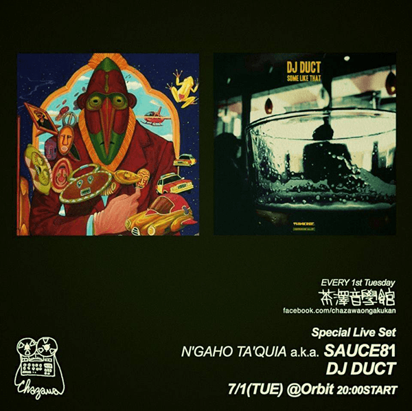
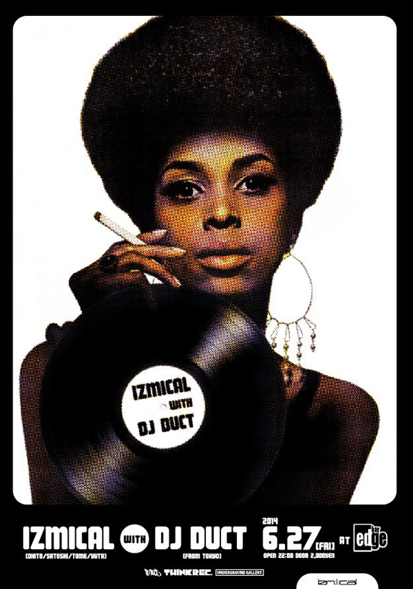
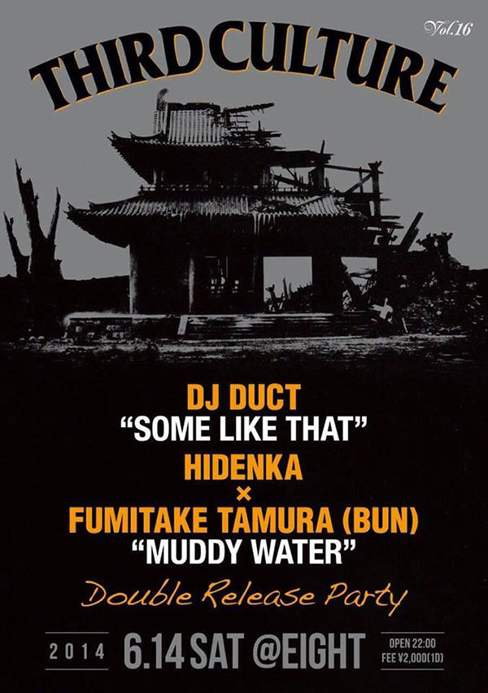
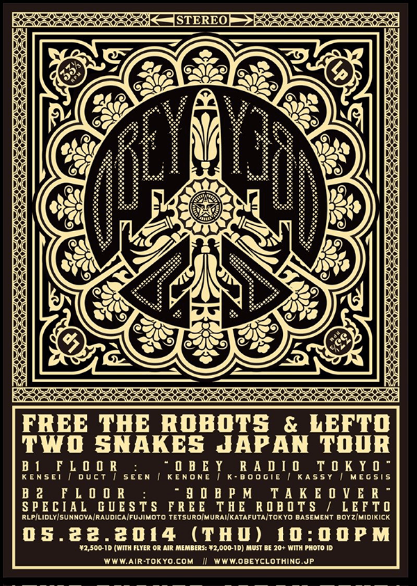
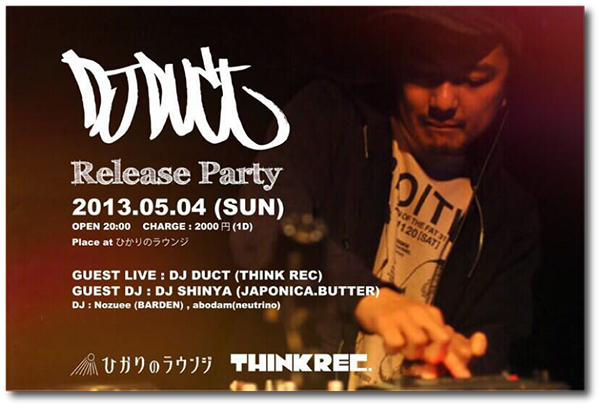
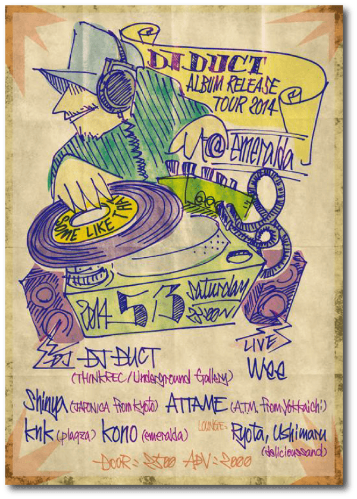
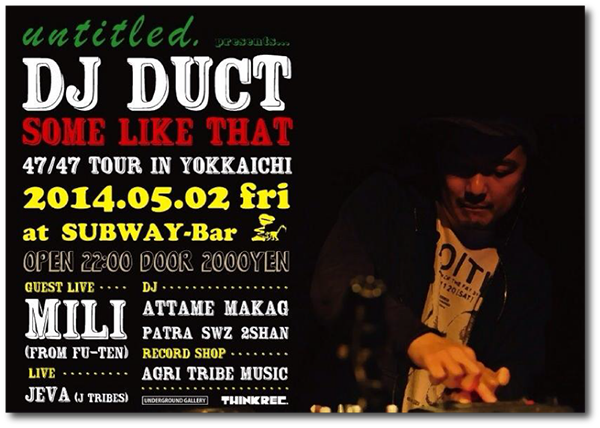
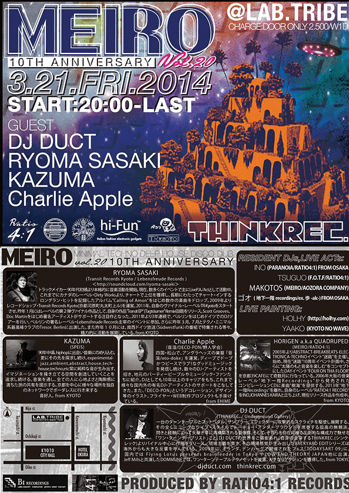

- HOME >
- EVENT
- DAY:
- OPEN:
- 23:00
- CHARGE:
- DOOR: 2,500(1D)
- with FLYER MB: 2,000(1D)
- FOREIGNER & STUDENT MB: 1,500(1D)
- PLACE:
- troopcafe, KOBE
- 
-
- NEW RELEASE LIVE ACT:
- O.N.O a.k.a MachineLive(THE BLUE HERB / STRUCT)
- DJ DUCT(THINKREC. / Underground Gallery)
- DUCTELLi(DJ DUCT + TELLY / Underground Gallery)
- DAY:
- OPEN:
- 20:00
- CHARGE:
- ADV: 2,500
- DOOR: 3,000
- PLACE:
- METRO, KYOTO
- 
-
- MAIN FLOOR:
- Shing02 + SPIN MASTER A-1
- あらかじめ決められた恋人たちへ
- 1945 a.k.a KURANAKA
- DJ DUCT(THINKREC./Underground Gallery)
- seiho
- HALFBY
- Lainy J Groove
- MAMEZUKA
- DJ SHINYA
- TAMAI-I
- FLUID
- DREAMS DUB CREW
- 2nd. FLOOR:
- B FROM OUTATBERO
- Eadonmm
- ieva
- Kafuka
- Ken'ichi Itoi
- Madegg
- Metome
- Natiho Toyota
- Natiho Toyota
- RIPE
- Toshiyuki Hiramatsu
- Yudai Tamura
- DECO:
- YOTTU
- FOOD:
- Sunshine Cafe
- DAY:
- START:
- 20:00
- PLACE:
- orbit, TOKYO
- 
-
- SPECIAL LIVE SET:
- DJ DUCT(THINKREC./Underground Gallery)
- N'gaho Ta'quia a.k.a sauce81
- DAY:
- OPEN:
- 22:00
- CHARGE:
- DOOR: 2.000/w1D
- PLACE:
- EDGE, HIROSHIMA
- 
-
- GUEST:
- DJ DUCT(THINKREC./Underground Gallery)
- RESIDENTS ACT:
- SATOSHI
- Okito
- TOME
- SUTR
- DAY:
- OPEN:
- 22:00
- CHARGE:
- DOOR: 2.000/w1D
- PLACE:
- CLUB EIGHT, SHIZUOKA
- 
-
- GUEST:
- DJ DUCT(THINKREC./Underground Gallery)
- HIDENKA x FUMITAKE TAMURA (BUN)
- and more...
- DAY:
- OPEN:
- 22:00
- CHARGE:
- DOOR: 2.500(1D)
- W/F: 2.000(1D)
- PLACE:
- AIR, TOKYO
- 
-
- GUEST ACTS:
- FREE THE ROBOTS
- LEFTO
- MAIN: 90BPM TAKEOVER:
- Free The Robots
- Lefto
- RLP
- Lidly
- SUNNOVA
- raudica
- Fujimoto Tetsuro
- MURAI
- katafuta
- TOKYO BASEMENT BOYZ
- MidiKick
- LOUNGE: “Obey Radio Tokyo”
- KENSEI
- DJ DUCT(THINKREC./Underground Gallery)
- SEEN
- KENONE
- K-BOOGIE
- KASSY
- MEGSIS
- DAY:
- OPEN:
- 20:00
- CHARGE:
- DOOR: 2.000(1D)
- PLACE:
- ひかりのラウンジ, OKAZAKI
- 
-
- GUEST LIVE:
- DJ DUCT(THINKREC./Underground Gallery)
- GUEST DJ:
- Shinya (JAPONICA)
- DJ:
- Nozuee (BARDEN)
- abodam (neutrino)
- DAY:
- OPEN:
- 23:00
- CHARGE:
- ADV: 2,000 / DOOR: 2.500
- PLACE:
- EMERALDA, GIFU
- 
-
- DJ’s:
- DJ DUCT(THINKREC./Underground Gallery)
- Shinya (JAPONICA)
- ATTAME (Agri Tribe Music)
- knk (plaqza)
- kono (emeralda)
- LIVE:
- wee
- LOUNGE:
- Ryota & Ushimaru (delicious sand)
- DAY:
- OPEN:
- 22:00
- CHARGE:
- DAY: 2,000
- PLACE:
- subway-bar, YOKKAICHI
- 
-
- GUEST DJ:
- DJ DUCT (THINKREC / Underground Gallery)
- GUEST LIVE:
- MILI (FU-TEN)
- DJ’s:
- ATTAME
- MAKAG
- PATRA
- SWZ
- 2shan
- LIVE:
- JEVA (J TRIBES)
- DAY:
- START:
- 20:00
- END:
- 05:00
- CHARGE:
- DOOR ONLY 2.500/W1D
- PLACE:
- LAB TRIBE, KYOTO
- 
-
- GUEST DJs:
- DJ DUCT(THINKREC./Underground Gallery) FROM TOKYO
- RYOMA SASAKI(TR-Kyoto/Lebensfreude Records) FROM KYOTO
- KAZUMA(SPEIS) FROM KYOTO
- CHARLIE APPLE(音溶/DECO-PON/野人学会) FROM EHIME
- RESIDENT DJs&LIVE ACTs:
- HORIGEN(MEIRO/RATIO4:1)
- INO(PARANOIA/RATIO4:1) FROM OSAKA
- TSUGUO(F.O.T.F/RATIO4:1)
- MAKOTOS(MEIRO/空音)
- ゴオ(地下一階recordings/ex.歩-alc-) FROM OSAKA

{kind=link}
{kind=link}
{kind=link}
{kind=link}
{kind=link}
{kind=link}
{kind=link}
{kind=link}
{kind=link}
{kind=link}